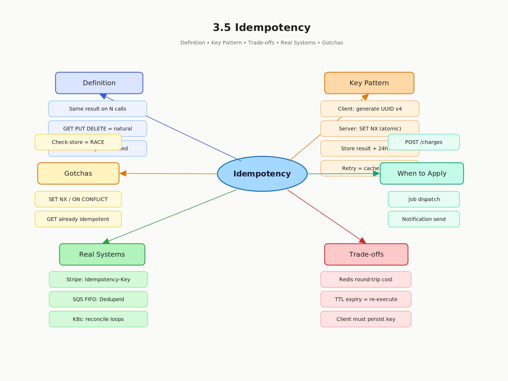

3.5 Idempotency
Definition, Importance, and Design Patterns
01 Goal of This Subtopic
- Be able to define idempotency precisely and classify any operation as idempotent or non-idempotent on demand.
- Be able to design an idempotency key pattern end-to-end: key generation, storage, atomic check, TTL, and failure scenarios.
- Understand why idempotency is the foundational contract enabling at-least-once delivery and stateless service retries — and identify which interview scenarios require it.
02 What Mastery Looks Like
- Can define idempotency in one sentence and give two idempotent and two non-idempotent HTTP API examples without hesitation.
- Can design an idempotency key scheme end-to-end: key generation, storage (Redis or DB), lookup logic, TTL, and failure scenarios.
- Can explain why at-least-once delivery requires idempotent consumers and describe what breaks if the consumer is not idempotent.
- Can identify when idempotency is required in a design (payment, job dispatch, notification send) and articulate the exact design pattern to apply.
- Can explain the difference between idempotency, immutability, and purity — and why idempotency does not mean "no side effects ever."
03 Study Phases to Achieve Mastery
Goal: Read deeply enough that you could explain the concept without the doc.
- Read Designing Data-Intensive Applications — Ch. 11 on idempotent operations and retry safety
- Read AWS Builder's Library: Making Retries Safe with Idempotent APIs
- Read Stripe Docs: Idempotent Requests — production-grade lifecycle example
- Read Sections 5–9 (Core Definition → How It Works) carefully — don't skim
- Re-read the Cheatsheet (Section 4) and recite from memory after
Goal: Reproduce the knowledge in your own words without looking.
- Close the doc — write out the Core Definition from memory, then compare
- Explain First Principles out loud — what problem existed before idempotency keys?
- Reconstruct the How It Works mechanics (happy path, retry path, concurrent retry) step by step
- Restate each Trade-off row in your own words
Goal: Connect to real systems and simulate interview scenarios.
- Go through Real-World System Examples — verify each claim independently
- Practice the Interview Application out loud — trigger phrases + trade-off statement
- Work through Common Misconceptions — explain WHY each is wrong, not just that it is
- Trace the Relationships to Other Concepts without looking
Goal: Confirm you actually own it, not just recognize it.
- Answer every Self-Check Quiz question out loud without notes
- Recite the Cheatsheet from memory — if you can't, re-do Phase 2
- Tick off Mastery items — only if you can demonstrate on demand
- Teach this concept for 2 minutes to an imaginary interviewer without hesitation
04 Cheatsheet

05 Core Definition
An idempotency key is the mechanism that imposes this property on operations that are not naturally idempotent: the server deduplicates requests by key and replays the stored response for retries rather than re-executing the operation.
06 Core Concepts
PUT /users/42 100× = same state). Others aren't (POST /charges 100× = 100 charges). Enforced idempotency is the design pattern of adding a key to make the latter safe.SET NX or INSERT … ON CONFLICT DO NOTHING.Idempotency vs. Immutability vs. Purity
Three terms often confused: Immutability = data never changes. Purity = no side effects at all (pure function). Idempotency = side effects happen exactly once regardless of retries. A payment charge is not immutable, not pure, but can be idempotent if protected by a key.
07 First Principles — Why Does This Exist?
Networks are unreliable. A client sends POST /charges. The server processes the charge, debits the card, sends back 200 OK — but the response packet is lost. The client times out and retries. Now the user is charged twice.
This is the fundamental problem: the client cannot distinguish between a request that never arrived and a response that was lost in transit. Both look identical — silence. So retrying is the only correct client strategy, but retrying non-idempotent operations is catastrophic.
Before idempotency keys, the only options were: never retry (accept data loss) or accept double-processing (accept correctness bugs). Idempotency keys solved this by making the server responsible for deduplication — the client retries freely, and the server ensures the operation executes exactly once.
08 Mental Models
Model 1: The Light Switch vs. The Doorbell
A light switch is idempotent: pressing "ON" when already ON does nothing — same state results. A doorbell is not: pressing it three times rings three times. Most write APIs are doorbells by default. An idempotency key converts your doorbell into a light switch — the server checks "was this already rung?" before acting. Breaks down when: the "already rung" check itself requires atomic persistent storage, which adds complexity the analogy doesn't capture.
Model 2: The Post Office Certified Mail Receipt
You send certified mail with a tracking number. If the package appears lost, you call and ask "what happened to #12345?" — you don't send a second package with a new number. The tracking number is the idempotency key. The post office uses it to look up the result, never delivering twice for the same number. Key insight: the key identifies the logical transaction, not the HTTP request.
Model 3: Retry = Replay, Not New Request
The mental shift: a retry is not a new request — it is a replay of the same request. Once internalized, the design follows: store the result of the first execution so you can replay it. The key is the lookup index. The TTL defines how long you're willing to replay. The client must generate the key before the first attempt — a new key on retry defeats the entire mechanism.
09 How It Works — Mechanics
Happy Path — First Request
- 1Client generates a UUID v4 key (
idem-key: a3f9b2c1-…) before sending the request. - 2Client sends
POST /chargeswith the key in the header. - 3Server runs atomic check:
SET NX idem:a3f9b2c1 "processing" EX 86400in Redis. - 4Key doesn't exist → SET succeeds → server executes the charge business logic.
- 5Server stores result:
SET idem:a3f9b2c1 <serialized_response> EX 86400. - 6Server returns
201 Createdwith charge details.
Retry Path — Response Was Lost
- 1Client times out and retries with the same key (
idem-key: a3f9b2c1-…). - 2Server attempts
SET NX— fails because key exists. - 3Server reads stored result for key
a3f9b2c1. - 4Result is the cached response (not "processing") → return it immediately. No charge re-executed.
Concurrent Retry — Two Retries Simultaneously
- 1Two requests with the same key arrive on different servers simultaneously.
- 2Both attempt
SET NX. Redis is single-threaded — only one wins. - 3Winner executes. Loser polls until value changes from "processing" to a real result.
- 4One charge executes. Both clients receive identical responses.
Edge Case: Server Crashes Between Execute and Store
10 Real-World System Examples
| System | How Idempotency Applies | Notes |
|---|---|---|
| Stripe Payments API | Every write endpoint accepts Idempotency-Key header; Stripe stores results for 24 hours and replays on retry |
Industry gold standard; key must be unique per logical request, not per HTTP call |
| AWS SQS FIFO | At-least-once delivery requires idempotent consumers; FIFO queues add MessageDeduplicationId for 5-min exactly-once window |
Standard SQS is at-least-once; FIFO dedup is best-effort within the window |
| Kubernetes Controllers | All controllers are written as reconciliation loops — "apply desired state" can be called repeatedly without harm | This is why kubectl apply is safe to run multiple times |
| Twilio / Notification APIs | Accept idempotency keys to prevent double-sends when network timeouts cause client retries | Double-sending an SMS is a visible user-facing bug — idempotency is non-negotiable |
| Apache Kafka Consumers | Read → process idempotently → commit offset. Crash before commit = redelivery; idempotent consumer handles safely | Kafka's transactional producer provides exactly-once semantics on the producer side |
11 Trade-offs
| Benefit | Cost / Limitation |
|---|---|
| Safe retries in face of network timeouts and partial failures | Extra storage required for key-result pairs; must size TTL correctly |
| Prevents duplicate charges, double-sends, and double job dispatch | Key storage must be atomic with execution — adds latency and a Redis/DB dependency on every write |
| Enables at-least-once delivery without correctness bugs | Client must generate and persist the key before the first attempt |
| Decouples client retry logic from server business logic | TTL expiry means retries after the window are treated as new requests — client must not retry indefinitely |
| Composable with exponential backoff — retry aggressively if needed | Only covers exact key replays — does NOT handle concurrent different requests for the same resource (use optimistic locking for that) |
12 Interview Application
When an Interviewer Asks / Says
- "How would you make sure a payment isn't charged twice if the client retries?"
- "Our service uses a message queue — how do you handle duplicate messages?"
- "The client might not know if the request succeeded — what do you do?"
- "How do you make your API safe to retry without side effects?"
What You Say / Do
Raise idempotency during the API design or reliability deep-dive phase. Walk through key generation, server-side storage, atomic check-and-store, and TTL. Name the storage backend immediately: Redis SET NX for high throughput, or a UNIQUE DB column for lower volume with transactional needs.
Trade-off Statement — Memorize This
13 Common Misconceptions & Gotchas
14 Relationships to Other Concepts
| Relationship | Concept | How |
|---|---|---|
| Builds on | 3.1 Stateless Architecture; 3.3 Externalizing State to Redis | Idempotency is what makes stateless retry safe; key storage is itself an externalized state pattern |
| Enables | 12.3 Delivery Guarantees; 29.4 Idempotent Jobs; 38.7 Idempotency in Saga Steps | At-least-once + idempotent consumer = safe exactly-once semantics; each Saga step must be idempotent for safe orchestrator retries |
| Tension with | Low-latency write performance | Every idempotent write requires an extra Redis round-trip; mitigate with pipelining or co-location with the primary DB transaction |
15 Self-Check Quiz
GET /users/42, DELETE /users/42, POST /charges, PUT /users/42 {name:"Alice"}, PATCH /account {balance: balance-10}.total_orders counter on each "order placed" event. The consumer crashes after incrementing but before committing the offset. The event is redelivered. What breaks, and how do you redesign for idempotency?